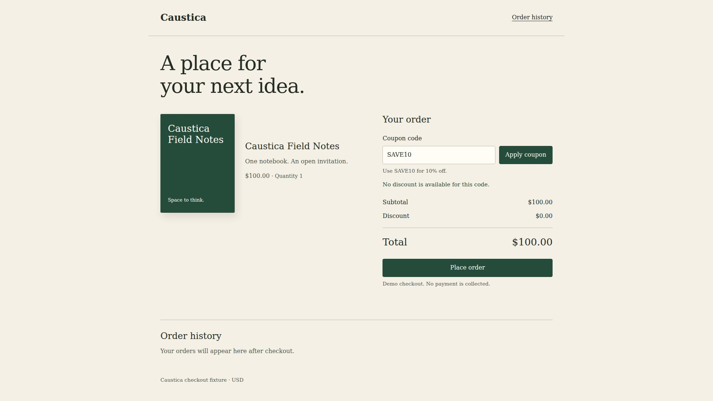
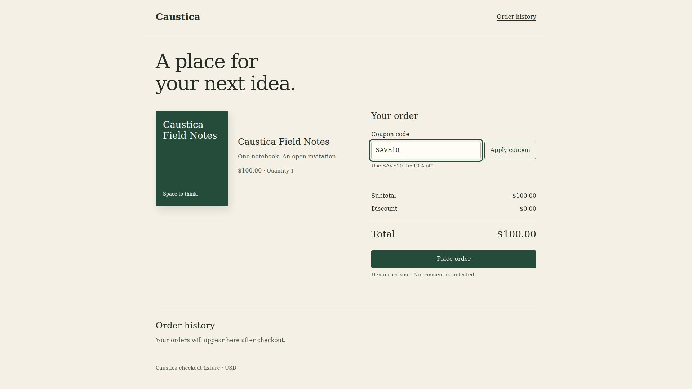
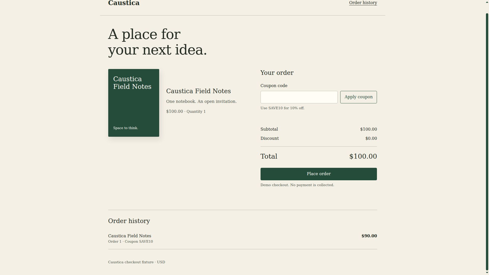

A repair verified against unchanged requirements.
This is a sanitized record of actual Kane runs and a recorded coding-agent repair on the owned checkout. Original run IDs and content digests identify the private evidence packs. The report contains no account identifiers or share links.
Actual proof chain
| Stage | Observed result | Expected / observed |
|---|---|---|
| Healthy application | Passed | $90.00 / $90.00 |
| Independent fault | Requirement failed | $90.00 / $100.00 |
| Seeded source regression | Requirement failed | $90.00 / $100.00 |
| Repaired application | Passed | $90.00 / $90.00 |
| Repaired independent fault | Requirement failed | $90.00 / $100.00 |








Repair mode: Developer-mediated coding-agent feedback.
Actual application repair
diff --git a/apps/checkout/src/pricing.mjs b/apps/checkout/src/pricing.mjs
index e6ed586..ed98a06 100644
--- a/apps/checkout/src/pricing.mjs
+++ b/apps/checkout/src/pricing.mjs
@@ -1,7 +1,7 @@
-// Seeded application-source regression, separate from calibration control.
+// Coupon pricing; the independent response-layer control is unchanged.
export function quote(quantity, coupon) {
if (quantity !== 1) throw new Error('Quantity must be one');
const subtotalCents = 10_000;
- const discountCents = 0;
+ const discountCents = coupon === 'SAVE10' ? subtotalCents / 10 : 0;
return { subtotalCents, discountCents, totalCents: subtotalCents - discountCents };
}
Proof reuse rejected
Changed requirement: Frozen requirements or global variable inputs changed; freeze a new version and recalibrate
Different source bytes: Receipt belongs to different application bytes
Sanitized run identifiers and content digests
{
"version": 1,
"scope": "Sanitized summary of genuine local runs; raw sealed packs stay private",
"demoId": "demo-2026-11-18T14-27-45-150Z-69c601d3",
"frozenContract": {
"version": 3,
"title": "Checkout with SAVE10",
"objective": "Go to {{app_url}}. Enter SAVE10 in Coupon code and click Apply coupon. Store the displayed Total as 'displayed_total'. Assert that Total is 90 dollars. Place the order. Store its order identifier as 'order_id'. Reload the page. Open Order history. Assert that the same order is shown with Caustica Field Notes, coupon SAVE10 and a 90 dollar total.",
"requirements": [
{
"id": "coupon-total",
"expectedCents": 9000,
"description": "SAVE10 changes the visible total from $100.00 to $90.00."
},
{
"id": "order-total",
"expectedCents": 9000,
"description": "Place order persists Caustica Field Notes, SAVE10 and a $90.00 total."
},
{
"id": "order-refresh",
"expectedCents": 9000,
"description": "Order history shows the same order and amount after refresh."
}
]
},
"baselineVerification": "verify-2026-11-18T13-58-48-537Z-7193a823",
"repairedVerification": "verify-2026-11-18T14-19-12-584Z-fc3c0da1",
"repair": {
"runId": "repair-2026-11-18T14-19-12-428Z-ae74f534",
"adapter": "developer-mediated",
"changed": [
"apps/checkout/src/pricing.mjs"
]
},
"results": [
{
"stage": "Healthy application",
"runId": "checkout-2026-11-18T13-58-48-544Z-0dcebe37",
"executionId": "54e08651-2477-4310-9868-4e5174c7c3e2",
"appDigest": "78419e9844c48d76a989348586aa4e643d91322856eef856c989d516ff9160c2",
"boundaryDigest": "00095c9df8e4311c349c1f2396e06aded888aa405575eb38fd2d19db6a1110f5",
"control": "none",
"outcome": "passed",
"expectedCents": 9000,
"observedCents": 9000,
"evidenceDigest": "f4a780406c29189df4d2abf3e6b936cd5d5f9f00b38989975bdd9f936957ed04",
"durationMs": 221413,
"screenshot": "checkout-2026-11-18T13-58-48-544Z-0dcebe37-screenshot.jpg"
},
{
"stage": "Independent fault",
"runId": "control-2026-11-18T14-02-30-008Z-0c8c9e64",
"executionId": "1a97e99b-2ea5-4a35-af49-c5ca51c0451f",
"appDigest": "78419e9844c48d76a989348586aa4e643d91322856eef856c989d516ff9160c2",
"boundaryDigest": "00095c9df8e4311c349c1f2396e06aded888aa405575eb38fd2d19db6a1110f5",
"control": "ignore-discount",
"outcome": "assertion-failed",
"expectedCents": 9000,
"observedCents": 10000,
"evidenceDigest": "7073cd9aad4b2a31c41d344a34687692d51a2c291da6086430740d4461b893d5",
"durationMs": 147529,
"screenshot": "control-2026-11-18T14-02-30-008Z-0c8c9e64-screenshot.jpg"
},
{
"stage": "Seeded source regression",
"runId": "checkout-2026-11-18T14-04-57-664Z-629b7cc1",
"executionId": "4e3b64b2-2687-499a-9d45-ed3bb31f9a68",
"appDigest": "c42315e6596ff2a7e38175627235eef8c383cb85132933376e8b4a91019c8da5",
"boundaryDigest": "00095c9df8e4311c349c1f2396e06aded888aa405575eb38fd2d19db6a1110f5",
"control": "none",
"outcome": "assertion-failed",
"expectedCents": 9000,
"observedCents": 10000,
"evidenceDigest": "fba72e7482a1b27a963883e5b4317b9cb4f950f66e0194ce14ec6c406c806daf",
"durationMs": 115962,
"screenshot": "checkout-2026-11-18T14-04-57-664Z-629b7cc1-screenshot.jpg"
},
{
"stage": "Repaired application",
"runId": "checkout-2026-11-18T14-19-12-589Z-d85cbeff",
"executionId": "39b483fd-a37c-4ba2-a832-b71a6f9b51e4",
"appDigest": "e8ed602ca01fc848c56b88329f8406f59003415cc241eb189f4807a8b7b919df",
"boundaryDigest": "00095c9df8e4311c349c1f2396e06aded888aa405575eb38fd2d19db6a1110f5",
"control": "none",
"outcome": "passed",
"expectedCents": 9000,
"observedCents": 9000,
"evidenceDigest": "3ece4bd6cb73b5d151e9d55670bacf212b7333eec2b201ecd6a8302448294f68",
"durationMs": 264445,
"screenshot": "checkout-2026-11-18T14-19-12-589Z-d85cbeff-screenshot.jpg"
},
{
"stage": "Repaired independent fault",
"runId": "control-2026-11-18T14-23-37-045Z-32767740",
"executionId": "8160b7e2-822c-40a3-b251-79bb20aad246",
"appDigest": "e8ed602ca01fc848c56b88329f8406f59003415cc241eb189f4807a8b7b919df",
"boundaryDigest": "00095c9df8e4311c349c1f2396e06aded888aa405575eb38fd2d19db6a1110f5",
"control": "ignore-discount",
"outcome": "assertion-failed",
"expectedCents": 9000,
"observedCents": 10000,
"evidenceDigest": "181b9299216950d8669986d5d87ab064e18b25979b2b54c6ce02c715b36c1f2e",
"durationMs": 140286,
"screenshot": "control-2026-11-18T14-23-37-045Z-32767740-screenshot.jpg"
}
],
"rejections": {
"contract": {
"verdict": "evidence-rejected",
"reason": "Frozen requirements or global variable inputs changed; freeze a new version and recalibrate"
},
"staleBuild": {
"verdict": "evidence-rejected",
"reason": "Receipt belongs to different application bytes"
}
}
}Summary JSON · Source diff. Reproduce with the repository’s frozen checkout contract and real account access.